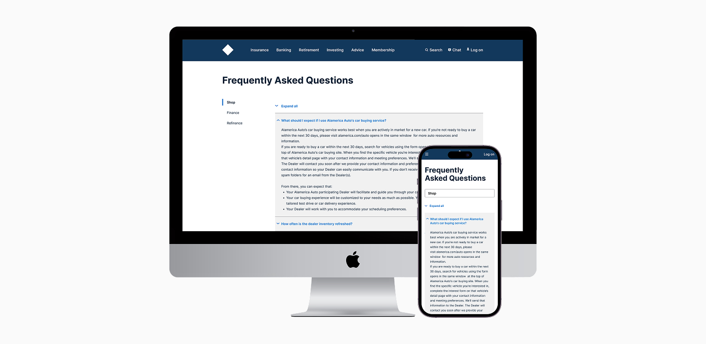
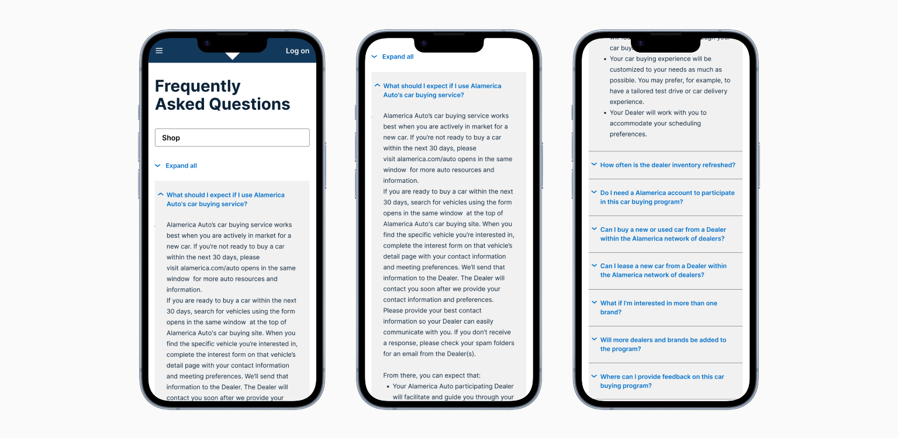
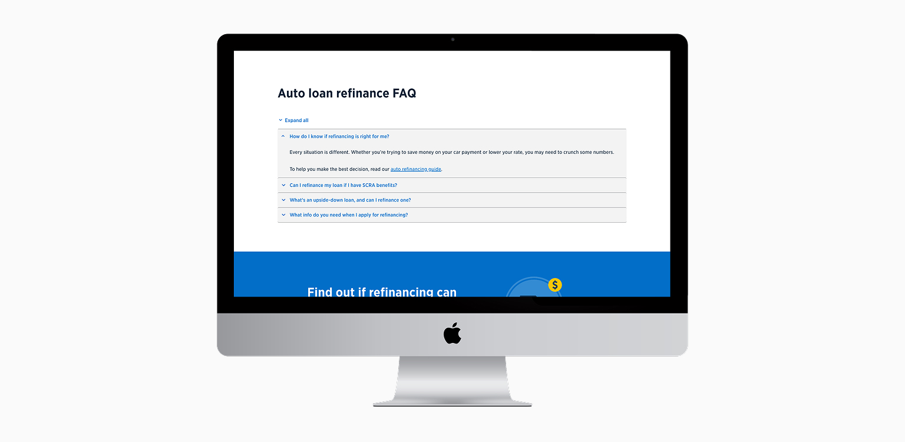

INFORMATION ARCHITECTURE
Auto Loan FAQ Design

Auto Loan FAQ page
IMPACT AND RESULTS
One page changed how compliance content would be handled across the platform.
Readability and findability improved
Dense compliance text was reorganized into clearly labeled categories with accordion components and tab navigation. Members could scan and locate information without reading everything on the page.
A template that scaled across products
This was the first standalone FAQ page built for the platform. The categorized structure it established was adopted across other lending products, making it foundational rather than one-off.
Reduced calls to customer support
The on-page FAQ section on the Auto Loan Refinance page led to a measurable decrease in support calls following launch. Members were finding answers on the page rather than picking up the phone.
Why this mattered
Compliance content was failing members.
Legal and compliance teams required additional disclosures on the Auto Loan Refinance page. The content was legally accurate but practically unusable. Dense blocks of text, unclear labeling, and mixed content types made it difficult for members to find what they needed, increasing confusion and driving up support volume. The business needed a way to meet legal requirements without making the experience worse.
WHERE IT BROKE DOWN
Two things were making the page unworkable.
Content Overload
Long blocks of compliance-approved text made it difficult to find relevant information. Everything was present but nothing was findable.
Unclear Information
Legal, technical, and loan requirements were mixed together without clear labeling or separation. Members could not tell what type of information they were reading or where to look for what they actually needed.
THE AUDIT
Diagnosing the problem before the fix.
Competitive Analysis
I reviewed how other financial institutions handled compliance-heavy content. The strongest examples used clear categorization, expandable accordion sections, and tab-based navigation to make required content accessible without overwhelming the page. That pattern became the model.
Design Principles
Three things shaped every decision:
Organize content by type, not by page order
Make disclosures findable, not just present
Build a structure that scales beyond this page
THE APPROACH
Structure did what copy could not.
On-Page FAQ Section
An accordion-style FAQ embedded directly on the Auto Loan Refinance page. Quick access to legal, compliance, and technical disclosures organized into clear categories. Reduced scrolling without removing any required content.
Comprehensive Auto Loan FAQ Page
A standalone page with information architecture that separated legal, technical, and loan content into distinct sections. Tab navigation and anchor links let members jump directly to the section they needed. Search functionality and support links reduced the effort required to find answers.
Auto Loan FAQ Page: Tab navigation with anchor links, hierarchy for ease of use.

Mobile Auto Loan FAQ: Drop down instead of tabs but same functionality as desktop.

Auto Loan Refinance section on bottom of page using top 5 questions.
REFLECTION
What the page still needs to prove.
Building an accurate and organized FAQ was the right first step. What I would want to measure next is whether members are actually finding answers before calling support. Reduced confusion and reduced support volume would confirm the structure is working. Without that data the page is better organized but not yet proven effective. That measurement framework is what I would build into the next version from the start.